AI 每日新聞彙整
全部主題
其他
5 家媒體報導ipofundingtrillion
Anthropic targets $1.4 trillion IPO
Anthropic confirmed on Tuesday that its IPO could be one of the biggest ever, even while falling short of previous expectations. Its IPO price is expected to be between $70.00 and $78.00 per share, which would put its valuation as high as $1.4 trillion, according to the The New Y
- 科技新報 TechNews Anthropic 將在美 IPO，估值上看 1.4 兆美元
- IT之家 Anthropic 七名联合创始人拟在 IPO 中各套现 2.5 亿美元
- IT之家 Anthropic 发布 IPO 路演视频正式启动最高 643.5 亿美元募资计划，估值约在 1~1.4 万亿美元
- TechOrange 科技報橘 【科技早餐】Anthropic IPO 260 億美元認購草案曝光又撤回！台積電、NVIDIA 列名單
- The Verge AI Anthropic targets $1.4 trillion IPO
- TechCrunch AI Anthropic sets IPO price range of $70 to $78 per share to reach an implied valuation of $1.404 trillion
3 家媒體報導carbongeminiavailable
Gemini 4 Carbon is now available
- Simon Willison llm-gemini 0.36
- Google DeepMind Gemini 4 Carbon is now available
- The Verge AI Google releases Gemini 4 Carbon with agent ‘swarm’ feature
3 家媒體報導chatgptbusinessbusinesses
Introducing Businesses in ChatGPT
Manage your business information, get insights about how your business shows up, and turn interest into action in ChatGPT.
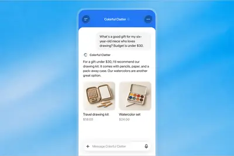
3 家媒體報導provedgooglesignal
Google’s new AI tool just proved Signal encryption really works – here’s how
With the aim of securing other vital systems, Google DeepMind plans to open-source its AlphaProof Code.
3 家媒體報導5.2mythosfable
Claude Fable 5.2 單價降 20%，企業就能省錢？推理設定讓每項程式任務成本差近 6 倍
Anthropic 在美國時間 11/9 發布 Claude Fable 5.2 與 Claude Mythos 5.2，宣稱新模型在幾乎所有評測過的能力上，都比自家的 Opus 5.5 略勝一籌；標準 API 價格也從前一代 5.1 版的每百萬輸入／輸出 token 10 美元、50 美元，降到 8 美元、40 美元。不過，在同一份官方公告裡，Anthropic 仍建議多數編碼與知識工作先從 Opus 5.5 開始。 《VentureBeat》也提醒，每項任務實際花多少錢可能是另一回事，因為真實的 AI 代理工作很少維持相同的用量。根據 Anthrop
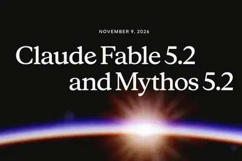
3 家媒體報導adobecreativephotoshop
Adobe brings AI agents and new creative tools to Photoshop, Premiere, and Firefly
Adobe is taking on Figma with a new prototype builder tool in Firefly.
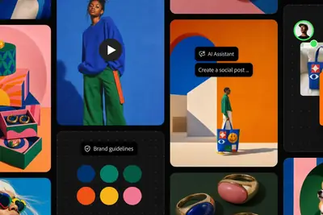
2 家媒體報導odessiasondertravel
OpenAI 收购旅游初创公司 Odessia，探索 AI 旅行智能体业务
IT之家 11 月 11 日消息，Odessia 创始人弗朗西斯 · 戴维森（Francis Davidson）今天宣布，OpenAI 已收购 AI 旅行智能体公司 Odessia，他本人也已经加入 OpenAI， 帮助这家 AI 初创公司探索旅游业务发展方向 。 据悉，Odessia 成立仅一年，就拿到了红杉资本领投的 600 万美元 （IT之家注：现汇率约合 4,011.9 万元人民币） 种子前融资，并在大约 5 个月前推出了 AI 旅游智能体服务，帮助早期用户规划价值数百万美元的旅行行程。 OpenAI 发言人证实了上述信息，并表示：“我们非常欢迎
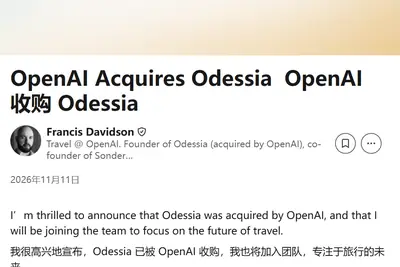
2 家媒體報導robotamazonring
Ring cameras go mobile as Amazon debuts AI-powered security drone and robot
Amazon's roaming Ring Robotics devices will debut in late 2026 and early 2027.
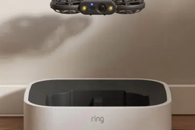
2 家媒體報導effectfreelancework
OpenAI, Anthropic face new oversight as New York’s AI safety law takes effect
New York is preparing to enforce its sweeping AI safety law, requiring major developers like OpenAI and Anthropic to register, disclose safety practices, and report critical incidents or face fines.
2 家媒體報導jensenhuangaffair
The US is winning the AI race. Jensen Huang could have blown it
As espionage targets go, Jensen Huang is perhaps one of the least surprising on Earth. The Nvidia CEO runs one of the world's most valuable companies, controls the in-demand technology fueling the AI boom, and is cozy with presidents, CEOs, and all manner of important people. He

2 家媒體報導owncodecoding
Anthropic has its own AI-powered office suite now
For years, Anthropic has been known for its focus on enterprise and coding tools that attract high-flying corporate clients, inspiring competing frontier labs - like OpenAI, SpaceXSI, and Meta - to copy its strategies. Earlier this year, Claude Code went through its own particula
- The Verge AI Anthropic has its own AI-powered office suite now
- Simon Willison Quoting Prompting Claude Fable 5.2
2 家媒體報導sourceopenopensource
Cyberattacks threaten to make open source AI a little less open, Hugging Face exec warns
Hugging Face executive Irene Solaiman warns that growing cyberattacks on open AI platforms could force tighter security restrictions, threatening the accessibility that makes open source communities valuable to developers worldwide.
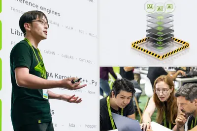
2 家媒體報導musemetalands
Introducing Our Smallest, Most Efficient Model: Muse Ember
Introducing Our Smallest, Most Efficient Model: Muse Ember Meta AI just launched their entry in the Claude Haiku/GPT Luna category: Muse Ember, which they describe as: [...] our smallest and most efficient model designed for complex reasoning execution and the work agents repeat
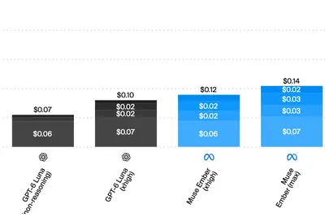
- TechCrunch AI Meta’s AI agent Muse lands on Apple Watch and Android Wear OS
- Simon Willison Introducing Our Smallest, Most Efficient Model: Muse Ember
2 家媒體報導ringdronehome
Hands-on with Ring’s new AI drone camera for your home
Ring is finally shipping a flying indoor drone camera. For real this time. The Ring Drone Cam will arrive on January 27th, 2027, for $249.99, Ring founder Jamie Siminoff said at a launch event in New York City this week. If it does actually ship, it will arrive almost six years a
2 家媒體報導intelcorecompute
英特爾在臺揭露主流PC、邊緣運算到資料中心最新運算架構，加速布局Agent AI
英特爾在今年8月舉行的Hot Chips 2026展示最新架構，反映AI運算競爭正在改變方向。過去幾年，市場焦點多集中於大型模型訓練，需要大量GPU算力與資料中心資源，但隨著生成式AI逐漸進入企業應用，接下來的挑戰將轉向如何讓模型被廣泛使用，也就是大規模推論。 呼應「Inference Everywhere」的策略願景，英特爾今天(11/10)在臺揭露AI PC、資料中心GPU與CPU三個層面布局AI運算，包括讓AI能力進入更多PC與邊緣裝置的Core系列3，以及降低企業部署AI推論成本的GPU D系列，還有提供企業級Agent AI協調運算能力的下一代
digitimesamdhbm
DIGITIMES Today： AMD的「AI預測」記憶體管理技術 | 愛普矽電容訂單能見度高 | 中國布局太空算力
各位讀者，早安。
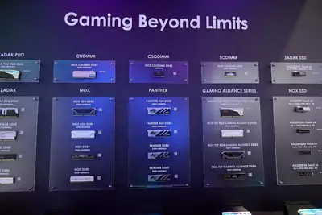
nttdatacenter
AI 資料中心邁向光電融合時代，日本 NTT 布局光學小晶片搶攻下波半導體商機
人工智慧運算需求急速成長，全球資料中心運算量大幅增加，但也讓傳統以銅線傳遞電子訊號的傳輸方式，限制 AI 伺服 […]
- 科技新報 TechNews AI 資料中心邁向光電融合時代，日本 NTT 布局光學小晶片搶攻下波半導體商機
dramhbm
高啟全直言台積電「做不來3D DRAM」 中系記憶體廠擴產才是衝擊
外界傳出，台積電因應NVIDIA要求，正評估跨入新一代3D DRAM市場，引發高度關注。對此，兆捷董事長高啟全直言：「台積電做不來3D DRAM。」台積則表示，不評論市場...
- DIGITIMES 高啟全直言台積電「做不來3D DRAM」 中系記憶體廠擴產才是衝擊
datacenter
評析：AI長期趨勢不變 資金排擠衝擊成大哉問
美國期中選舉結果，民主黨大勝，加上NVIDIA執行長黃仁勳深陷桃色國安疑雲，讓各界憂心美國AI資料中心興建受阻礙，是否衝擊整個產業？AI持續發展的大方向，產業界幾乎...
- DIGITIMES 評析：AI長期趨勢不變 資金排擠衝擊成大哉問
computedatacenter
中國星雲星座計畫推進太空算力 16家企業串聯晶片、伺服器與衛星供應鏈
人工智慧（AI）算力需求持續攀升，地面資料中心面臨電力、土地及散熱等種種挑戰，太空算力逐漸成為各國近年來喊出積極探索的新方向。中國雲端算力業者也開始關注此一太...
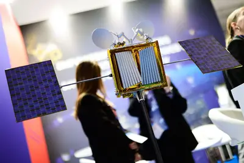
- DIGITIMES 中國星雲星座計畫推進太空算力 16家企業串聯晶片、伺服器與衛星供應鏈
nvidia
美中穿梭最具影響力黃仁勳陷間諜桃色風暴 全球AI產業面臨「關鍵人物風險」
地下戀情過去曾引發企業高層震盪，但幾乎沒有哪起事件像NVIDIA所面臨的這般風險巨大，此風波影響並不侷限於NVIDIA執行長黃仁勳個人及NVIDIA，而是牽涉整個AI產業...
- DIGITIMES 美中穿梭最具影響力黃仁勳陷間諜桃色風暴 全球AI產業面臨「關鍵人物風險」
openai
【漫圖秒懂】AI惹毛鄰居 OpenAI展開緊急公關大作戰
- DIGITIMES 【漫圖秒懂】AI惹毛鄰居 OpenAI展開緊急公關大作戰
sk-hynixhbmnvidia
從蝕刻到晶片熱分析 SK海力士借力NVIDIA提升研發效率
SK海力士（SK hynix）透過NVIDIA的AI與GPU加速技術，推進記憶體研發模擬，在蝕刻製程研發及晶片熱與彈性變形分析測試取得成果。隨著記憶體結構與製程日益複雜，...
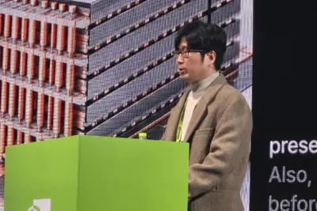
- DIGITIMES 從蝕刻到晶片熱分析 SK海力士借力NVIDIA提升研發效率
asicvpdvertical
垂直供電架構推升雙面水冷板需求 奇鋐出貨搶商機
散熱模組廠奇鋐預估，到2027年底，不論ASIC或GPU伺服器，將會全面導入液冷散熱，且客戶因應AI伺服器VPD（Vertical Power Delivery；垂直供電）設計需求，將會積極...
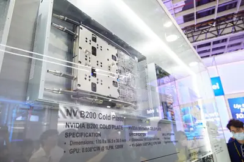
- DIGITIMES 垂直供電架構推升雙面水冷板需求 奇鋐出貨搶商機
samsung3800gpu
三星結合AI均質化與GPU 半導體模擬速度達原本3,800倍
三星電子（Samsung Electronics）將NVIDIA的AI建模工具與GPU運算導入半導體模擬，結合均質化（homogenization）方法，將原需18小時的運算縮短至17秒，加速約3,...
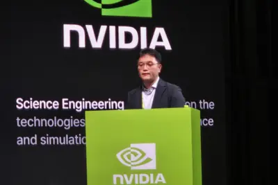
- DIGITIMES 三星結合AI均質化與GPU 半導體模擬速度達原本3,800倍
computedatacenterfunding
中國AI資料中心擴建潮浮現 閒置隱憂與美國建設受阻形成對比
中國AI算力建設持續擴大，地方政府及國資平台積極投入AI資料中心，從GPU採購、伺服器部署到資料中心建置，帶動一波基礎設施投資熱潮。不過，機房蓋好、設備上架運營後...

- DIGITIMES 中國AI資料中心擴建潮浮現 閒置隱憂與美國建設受阻形成對比
jensanity
NVIDIA黃仁勳聲譽風暴恐成雙面刃 中國AI產業得利不成反受傷？
「黃仁勳狂熱」（Jensanity）可說是推動全球人工智慧（AI）熱潮的一大動力。
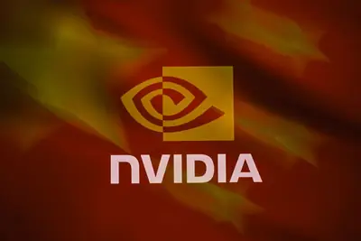
- DIGITIMES NVIDIA黃仁勳聲譽風暴恐成雙面刃 中國AI產業得利不成反受傷？
nvidia
評析：「企業綁定創辦人」品牌模式會讓NVIDIA樓起樓塌嗎？
一封針對婚外情風暴的道歉信，將NVIDIA創辦人暨執行長黃仁勳推上輿論的風口浪尖。然而，全球市場需面對令人不安的現實，AI生態系中第一位「大到不能倒」的企業高層突...
- DIGITIMES 評析：「企業綁定創辦人」品牌模式會讓NVIDIA樓起樓塌嗎？
swift2027wwdc27
首次开放其全平台：苹果启动 2027 Swift 学生挑战赛，获奖者直通 WWDC27 大会
IT之家 11 月 11 日消息， 苹果公司于 11 月 10 日宣布启动 2027 年 Swift 学生挑战赛，面向全球年轻开发者征集创意应用作品。 参赛者可在 2027 年 2 月 8 日至 2 月 28 日提交作品，使用 Xcode 或 Swift Playgrounds 构建的应用需在 3 分钟内完成演示。 与往年不同，本届比赛首次允许学生提交面向任意平台的应用，不再局限于 iOS 设备。这意味着参赛项目可覆盖 iPhone、iPad、Mac、Apple Watch、Apple TV，甚至 Vision Pro 等苹果生态产品，为学生的创意提供了
microsoftregulationfcc
微软游说美国政府放弃中国光模块进口限制，担忧拖慢 AI 数据中心建设
11 月 11 日，据路透社报道，微软正游说特朗普政府放弃限制进口中国新型号光收发器的计划。微软与其他科技企业及行业组织认为，中国光收发器一旦遭到限制，可能造成关键零部件短缺，进一步拖慢美国 AI 数据中心建设。 知情人士称，微软等企业今年 9 月曾与白宫科技政策办公室及美国国家安全委员会官员会面，就潜在禁令可能造成的供应链问题提出担忧。市场研究机构 Cleanview 的数据显示，微软目前在美国有 35 座数据中心正在建设，另有 134 座处于规划阶段。 美国联邦通信委员会正在研究相关限制，但尚未公布最终规则。美国政府提出限制的理由是，中国制造的新型号
rtxspark128
技嘉推出 RTX Spark 迷你主机 AI Top Aero，最高 128GB 统一内存
IT之家 11 月 11 日消息，技嘉今日推出 AI TOP AERO 迷你主机，采用英伟达 RTX Spark 平台。这款产品拥有 Blackwell 架构 GPU、最高 128GB 统一内存和紧凑型设计，将端侧 AI 开发、内容创作和游戏体验带入个人工作空间。 据介绍， 这款迷你主机搭载英伟达 RTX Spark N1X 超级芯片 ，整合 20 核 Grace CPU 和 Blackwell 架构的 RTX GPU，最高可选 128GB LPDDR5X 统一内存，以及 4TB PCIe Gen 5 SSD，为端侧 AI 模型和 AI 应用程序提供充足
iphonesamsungpro
再迎“iPhone X 时刻”：20 周年款苹果手机前瞻，整机如一块玻璃、按键将全固态
IT之家 11 月 11 日消息，科技媒体 MacRumors 昨日（11 月 10 日）发布博文，梳理、验证和汇总多条供应链消息和可靠信源爆料，认为苹果为庆祝 iPhone 问世 20 周年，会在 2027 年 9 月推出 20 周年版 iPhone（上市后可能名为 iPhone 20 Pro），有望迎来外观、屏幕、交互、影像与芯片等全方位升级。 苹果 20 周年 iPhone 的 10 项主要变化： 四曲面全玻璃外观 ：屏幕玻璃向四边弯曲，视觉上弱化甚至隐藏金属边框。 更激进的全面屏 ：正面几乎无边界，呈现“一整块玻璃”的观感。 屏下 Face ID
hubshopifychatgpt
OpenAI 扩展 ChatGPT 商业功能：企业可认领资料并创建 AI 智能体，为 Business Agent 投放广告
IT之家 11 月 11 日消息，当地时间 11 月 10 日，OpenAI 宣布推出 ChatGPT Businesses 测试版，为企业提供商家信息认领、资料管理、用户互动数据分析以及 AI 智能体等服务，帮助企业通过 ChatGPT 接触潜在客户。 OpenAI 表示，目前全球每周有 12 亿人使用 ChatGPT。Businesses 功能将通过 Business Hub 提供，企业可以在其中认领自己在 ChatGPT 中的商家资料，并在完成身份验证后更新关键信息，还可以添加包含产品价格和库存情况的自助式产品数据源，让 ChatGPT 能够向用户
2.5roboticsvla
谷歌最强 VLA 机器人模型：Gemini Robotics 2.5 登场，会系蝴蝶结、已在奔驰生产线上岗
IT之家 11 月 10 日消息，谷歌推出迄今为止能力最强的视觉-语言-动作（VLA）机器人模型 Gemini Robotics 2.5 ，大幅提升机器人可学习的技能广度与学习速度。 该模型增强了机器人的灵巧度、可靠性与安全性，助力机器人走出实验室，进入更非结构化的真实环境，协助人类完成更多类型的任务。 谷歌今年早些时候已为包括人形机器人在内的多种机器人引入 全身智能 。此次进展很大程度上得益于 Gemini 4 Argon 加速机器人研发的能力，进一步拓展了物理智能的边界。 谷歌在超过 200 项 不同任务中测试了 Gemini Robotics 2.
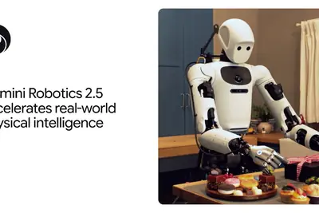
carbongeminimka
谷歌迄今最强模型 Gemini 4 Carbon 登场：主打复杂编程、科学研究与网络安全
IT之家 11 月 11 日消息，当地时间 11 月 10 日，谷歌宣布正式开放 Gemini 4 Carbon 模型，面向开发者、企业、科研人员和消费者提供服务。 谷歌高级副总裁、DeepMind 首席 AI 架构师 Koray Kavukcuoglu 介绍称，该模型是谷歌目前能力最强的推理模型，重点面向复杂软件工程、多步骤智能体任务、科学研究和网络安全等场景。 Gemini 4 Carbon 于 10 月 28 日首次公布，此前通过 Fairwind Program（网络安全合作计划）向部分网络安全防御人员开放。此次则进一步扩大使用范围。 谷歌称，相
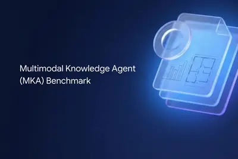
sheetsclaudewhiteboards
Anthropic 升级 AI 办公套件：从头脑风暴到数据看板，Claude 想承包团队协作全流程
IT之家 11 月 11 日消息，Anthropic 今日开始推出 Claude Whiteboards（白板）、Claude Sheets（表格）和 Claude Data（原 Claude Dashboards），把 AI 助手从“聊天问答”进一步推向团队协作工作台， 用户可以在白板上梳理计划、在表格中搭建追踪器，并把业务数据变成可共享的仪表盘、数据故事或解说视频。 三项产品面向所有付费计划提供，支持网页端、桌面端和移动端；其中白板应用 Whiteboards 与表格 Sheets 目前处于测试阶段，Claude Data 则已正式上线。 官方希望让
urlhttpscomments
After 7 Months, Glasswing Overwelms Maintainers with Underwhelming Findings
Article URL: https://www.vulncheck.com/blog/anthropic-glasswing-november-update Comments URL: https://news.ycombinator.com/item?id=50447074 Points: 105 # Comments: 25
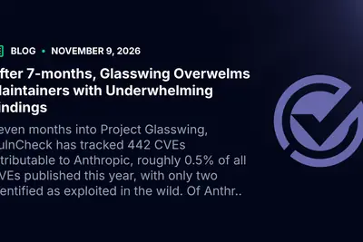
- Hacker News (100+) After 7 Months, Glasswing Overwelms Maintainers with Underwhelming Findings
- Hacker News (100+) Claude Whiteboards, Claude Sheets, and Claude Data
xaigrokbuild
Grok Build coding agent leaks oodles of confidential info, some belonging to SpaceXSI
Researcher finds 35,000 Grok Build apps wide open to anyone who looked for them.
fixesmenuwindows
New Windows 11 update fixes File Explorer menu mess – and patches an exploited flaw
With the November Patch Tuesday rollout, you can finally customize your right-click menu in Windows 11. It fixes 1,094 security flaws, too.
appleneedsiri
All your Apple devices need to be patched ASAP – here’s why
Security updates for iPhones, iPads, Macs, Apple Watches, and Vision Pro just rolled out.
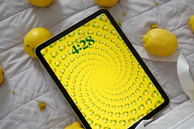